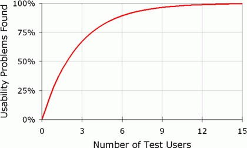

Testing

How the project will be tested
Pre-release
We plan to test the wireframes/prototype using moderated in person testing (MeasuringU: What UX Methods to Use and When to Use Them, 2020) as a qualitative approach will provide much more valuable insights into user behaviour and use of the product then a quantitative method such as a survey.
Beta-testing
Once the pre-release testing and design cycle is complete we will move onto broader beta-testing wich will be conducted using a combination of unmoderated remote usability testing (MeasuringU: What UX Methods to Use and When to Use Them, 2020) and surveys in the form on online questionnaires.
Finding test users
Pre-release
As Flick Deck is being developed with little to no budget the pre-release test users will be selected from acquaintances of the initial development team that will be approached either in-person or online through platforms such as Facebook and LinkedIn.
Beta-testing
The beta testing will be offered to users of the beta product and will be approached directly after providing contact details on signup to the product.
Numbers of test users required
Pre-release
The pre-release moderated in person testing will be conducted with a small group of five to 10 users. The test size has been limited to under ten users as it has been stated that five users is all that is required to identify 85% of useability issues. (Nielsen, 2020)
